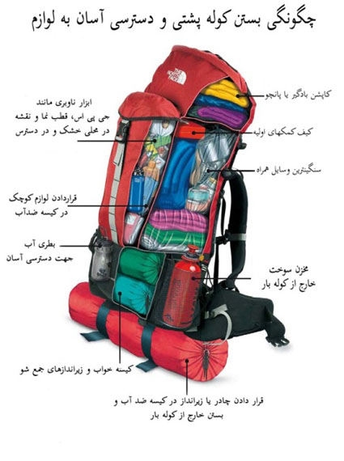

میزان مسافت نجف تا کربلا: ٨٠ کیلومتر
تعداد ستونها: ١٤٥٢ ستون
فاصله بین هر ستون: ٥٠ متر
زمان لازم برای پیاده روی کل مسیر: ٢٠ تا ٢٥ ساعت (متوسط روزی ٧ تا ٨ ساعت)
زمان تخمینی سفر پیاده: ٢ تا ٣ روز
بهترین زمان شروع سفر: ١٦ صفر
انتظار میرود در این تاریخ سفر تمام شود: ١٨ صفر
مسیر با خیل جمعیت پیاده کاملاً مشخص است و فقط کافی است باقی زائران را دنبال کنید.
واحد پول عراق: معمولاً به خاطر رایگان بودن خدمات در طول این سه روز هزینهای نخواهید داشت، اما مقدار کمی پول هم ضرر نخواهد داشت. بهتر است از پول ملی خودِ عراق استفاده کنید. (دینار عراق)
ایستگاههای امدادی و توزیع دارو و ملزومات پزشکی. در طول مسیر ایستگاههای امدادی تعبیه شده است که اگر مشکلی برای کسی پیش آمد، با مراجعه به این ایستگاهها از خدمات پزشکی بهرهمند شود. در طول مسیر، هلال احمر ایران نیز ایستگاههایی دارد که به زائرین خدمات میدهد.
برای خواب پیشنهاد میشود که اولاً کمی قبل از نماز مغرب، محلی را برای خواب از بین موکبهای طول مسیر انتخاب کنید؛ ثانیاً با توجه به سرمای شب سعی کنید به جای چادر در موکبهایی که ساختمان دارند و گرمتر هستند اتراق کنید. احتمال اینکه بعد از ساعت ٩ شب جای گرم و مناسب گیر بیاورید کمی سخت خواهد شد.
سرویسهای بهداشتی فراوانی در طول مسیر قرار دارند و همینطور تعدادی از موکبها نیز سرویس بهداشتی فرنگی دارند. از آنجا که آب برای شستن دستها بعد از دستشویی سرد است و بعضاً مایع و آب برای شستن دستها کم است، بهتر است همراه خود تعدادی دستکش یکبار مصرف داشته باشید تا برای دستشویی رفتن استفاده کنید تا اگر آب نبود یا سرد بود، نگران نظافت دستانتان نباشید. صابون خمیری و ژل شستشو حتماً همراه داشته باشید.
🔸سعی کنید وسایل کم وزنی را با خود حمل کنید. نیازی به همراه داشتن غذا یا آب نیست چون مقدار زیادی غذا و آب در مسیر موجود است.صرفا مقداری خشکبار مانند پسته ،بادام،انجیر خشک،برگه زردآلو بهمراه داشته باشید.
🔸مقداری داروی اساسی برای ۲ یا ۳ روز پیاده روی همراه داشته باشید. مانندقرص سرماخوردگی ،پماد برای باز شدن عضلات پا،باند کشی برای بستن پا در صورت نیاز، و… البته تعدادی کلینیک های کوچک و کمپ های درمانی در طول مسیر وجود دارند.
🔸به جای همراه داشتن کیف دستی یا کیف خرید از کوله پشتی سبک استفاده کنید.
🔸برای جلوگیری از سرما خوردگی لباس های مناسب به همراه داشته باشید: جوراب، دستکش،کلاه، پوشش گوش، کاپشن و غیره.البته بنابر تجربه هوا در طول روز مناسب و در شبها حسابی خنک است.لباسهای گرمتان را حتی الامکان جوری انتخاب کنید که دکمه یا زیپ داشته باشد و قابلیت کم یا زیاد کردن لباسهایتان را در طول مسیر داشته باشید. خانمها بهتر است، پارچه ای نرم مشکی مستطیل که جلوی صورت را بگیرد تهیه کرده و کش دوخته و چیزی شبیه پوشیده درست کنند تا در طول مسیر از سرما و گردوغبار محافظت کند. خانمها از چادری استفاده کنند تا امکان انداختن کوله باشد. انواع چادرهای لبنانی و ملی مناسب است.
🔸کرم مناسب برای تاول و عرق سوز به همراه داشته باشید. البته اگر میدانید دچارش می شوید.
🔸بد نیست یک عدد کیسه خواب نیز بهمراه داشته باشید تا در صورت مناسب نبودن و سرد بودن مکانها برای استراحت از شما در برابر خاک و سرما محافظت کند
🔸شما میتوانید یک قرآن، دعا و زیارت جیبی و یا مداحی مورد علاقیتان به همراه داشته باشید. البته بهتر است این ها را درموبایل خود داشته باشید تا درحال پیاده روی گوش فرا داده یا بخوانید.
🔸کفش های نو و بندی را نپوشید. بهتر است یک کفش مناسب و آزاد بپوشید. این مورد خیلی خیلی مهم است.چون در طول مسیر دایما برای استراحت در موکبها ناچار به در آوردن کفش از پا هستید.
🔸پاسپورت و شارژر موبایل را حتما به همراه داشته باشید.
🔸امکان گم کردن همراهانتان در طول مسیر وجود دارد بنابراین با توجه به آنتن ندادن موبایلتان در بعضی نقاط همچنین به دلیل ترافیک بالای شبکه از همان ابتدای مسیر شماره علمی(ستون ها) را انتخاب کنید که اگر همراهانتان را گم کردید زمان رسیدن به آن علم توقف کنند.فقط حواستان باشد شماره های رند خیلی شلوغ است
قرار با دوستانتان در محل سطون های رند نگذارید.
ازدحام دارد.

تقی دژاکام
تذکرات ضروری برای راهپیمایان اربعین
برای اینکه این سفر و بخصوص این راهپیمایی سه چهار روزه پربارتر و مفیدتر و پر نشاطتر باشد، شنیدن و به کار بستن برخی تذکرات و یادآوری ها به این دسته از مسافران حرم ضروری است.
سال به سال به خیل عاشقان ایرانی زیارت ابا عبدالله الحسین«ع» در روز اربعین و شرکت کنندگان در راهپیمایی عظیم چندین میلیونی این مسیر بخصوص مسیر نجف اشرف تا کربلا افزوده میشود. به همین دلیل، این روزها، همه جا حال و هوای رفتن به کربلای معلا و شرکت در راهپیمایی عظیم اربعین دیده میشود. آنها که رفتهاند خاطراتشان را برای آنها که نرفتهاند تعریف میکنند؛ آنها که نرفتهاند و تصاویر و فیلمهای مربوط را از تلویزیون میبینند، اشک حسرت میریزند و آنها که امسال عازمند...
شاید تنها با یک حس عاشقانه، عازم راه شدهاند و چیز زیادی از فراز و نشیب های احتمالی این راه نمیدانند، اما برای اینکه این سفر و بخصوص این راهپیمایی سه چهار روزه پربارتر و مفیدتر و پر نشاطتر باشد، شنیدن و به کار بستن برخی تذکرات و یادآوری ها به این دسته از مسافران حرم ضروری است.
این یادآوری ها را با مشورت و استفاده از تجربیات جمعی از دوستان خوب گرد آوری کردهام و پیشاپیش از صراحت در برخی از این یادآوریها پوزش میخواهم اما این تذکرات هم جوری نیست که بشود آنها را در نظر نگرفت چرا که در طول سفر و راهپیمایی ممکن است بی توجهی به آنها، زائران ابا عبدالله «ع» را با مشکل مواجه کند.
الف- پیش از سفر:
- به هیچ وجه با خودتان چمدان ها و ساک های بزرگ و حجیم نیاورید (بخصوص خانم ها به این نکته توجه داشته باشند!)، بلکه یک کوله پشتی راحت و متوسط انتخاب کنید.
- بهتر است کوله پشتیهایی انتخاب کنید که به قول کوهنوردها حداکثر چهل لیتری هستند. و چه بهتر که شستی هم داشته باشند و بندشان پیشسینه هم داشته باشد که بتواند کوله را بخوبی روی پشت، فیکس کند.
- در همین کوله پشتی از آوردن بارهای سنگین و کمرشکن خودداری کنید؛ مسیر نجف به کربلا حدود 85 کیلومتر است و بار سنگین، شما را از پا در میآورد.
- یک مفاتیح که اعمال زیارتی نجف و کوفه و کربلا را داشته باشد یا کتابهای مخصوصی که فقط این اعمال را ذکر کردهاند. به مفاتیح نصب شده روی گوشیهایتان اعتماد نکنید؛ بعید است بتوانید آنها را داخل حرمهای مطهر یا مسجد کوفه ببرید.
- یادتان هم باشد که در این مسیر، مدیران موکبهای بین راه، آنقدر با کرامت با شما برخورد میکنند که لازم نباشد با خودتان خوراکیهای زیاد و متنوع بردارید. بنابراین هیچ خوردنی در کوله پشتی خود بر ندارید مگر اینکه فرزند شیرخواری داشته باشید یا خدای نکرده به خاطر نوع خاصی از بیماری به دارو نیاز داشته باشید که برای آن باید تمهیدات لازم را بیندیشید.
- البته همراه داشتن مقداری مویز و کشمش و مغزهای خوراکی برای زمان پیاده روی بخصوص در هوای نسبتاً سرد شب برای تأمین انرژی توصیه شده است.
- حساب لیموترش و نمک، سواست. لیموترش را حتماً همراه داشته باشید و قبل از مصرف غذاهای گوشتی روی آنها چند قطره بچکانید تا از مسمومیتهای احتمالی پیشگیری کنید.
- با این حال، اگر بار و بندیل زیادی دارید و هیچ چارهای هم از آوردنش ندارید، برای اینکه در طول مسیر خودتان یا همراهانتان اذیت نشوید، بهترین کار این است که یک کالسکه بچه با خودتان بیاورید و بارهایتان را روی آن بگذارید و با این وسیله آنها را حمل کنید!
- برای بین راه، مشکلی برای اسکان ندارید چون موکبهای فراوانی هستند که شما را با اصرار دعوت به ناهار و شام و استراحت و ... میکنند. اما به هر حال، امسال به خاطر آواره شدن بسیاری از برادران شیعه و سنی ما بر اثر حملات داعش، صاحبان موکبها آنها را در همین استراحتگاه های مسیر اسکان دادهاند. با این همه، سعی کنید پتوهای بزرگ و حجیم و سنگین با خودتان نیاورید تا اذیت نشوید. بهترین چیز این است که از همین پتوهای سبک سفری تهیه کنید تا در صورت لزوم از آن برای گرمایش خود بهره بگیرید.
- حتماً یکی دو تا ملحفه سبک سفید تمیز و نیز چند ماسک یک بار مصرف با خودتان بیاورید.
- قاشق و چنگال و یک چاقوی کوچک و استکان یا لیوان کوچک دسته دار(برای چای خوردن در طول مسیر)، خمیردندان کوچک سفری و صابون کوچک، ژل ضد عفونی و چند شامپوی کوچک هتلی، مهر و جانماز کوچک و خودکار روان و کاغذ یا دفترچه یادداشت کوچک برای نوت برداری از اتفاقاتی که فراوان است و دیگر تکرار نمی شود و به احتمال زیاد فراموششان می کنید، از ضروریات است.
- داشتن کلاه خیلی به شما کمک می کند، چون هوا بشدت متغیر است و بالا پایین میشود. پیشنهاد میشود کلاهی انتخاب کنید که گوشهایتان را هم بپوشاند و اگر لبه دار هم باشد که بهتر؛ برای در امان بودن از آفتاب و نور شدید، عالی است. برخی آوردن یک چتر کوچک یا عصای کوهنوردی را هم توصیه میکنند اما دقت داشته باشید که بارتان را خیلی سنگین نکنید و جوری نشود که مثلاً همین عصا در کربلا دست و پا گیرتان شود؛ بخصوص اگر محل اسکان نداشته باشید.
- حتماً دو سه تا چفیه (ترجیحاً مدل سرداری) و یک حوله متوسط ( استخری کوچک) بیاورید. این چفیهها برای پوشاندن سر و گردن، خشک کردن دست و صورت و انداختن روی بالشهای خواب و خیلی موارد دیگر کاربرد دارند. برای بسیاری از افراد هم، کار حوله را هم میکند و میتوان از حوله استخری صرف نظر کرد تا بارتان سبکتر باشد. یک سربند هم با خودتان بردارید.
- مسئله کفش خیلی برای پیاده روی مهم است و علی رغم اینکه خیلی توصیه شده به دمپایی و اکثر اهالی عراق خودشان دمپایی میپوشند، کفشهای خوب ترکینگ شرکت های معروف بمراتب بهتر است.
- کفش هایی که از پارچه های گورتکس ساخته شدهاند و تختشان آنتیشوک و ضربه گیر دارد و الیاف نانونقره دارند خیلی بهتر است. این کفشها مانع عرق کردن میشود و اگر هم عرق کند، آن را به بیرون میدهد و پا خشک می ماند.
- با این حال اگر امکان تهیه چنین کفشهایی را ندارید، بهتر است از کفشهای تازه خریده و نو در این مسیر استفاده نکنید. کفشهای کتانی معمولی هم علیرغم آنکه راحتتر به نظر میرسند شاید بهترین گزینه نیستند. بهتر است کفش چرمیِ مدتی استفاده شده که نه خیلی گشاد و نه خیلی چسبان باشد برای این راه بپوشید. در میان گزینههای درجه دو، دمپایی البته بهتر و راحتتر است اما دمپایی هم از آن پلاستیکیهای زمخت نباشد؛ بلکه لاستیک نرم و منعطفی داشته باشد.
- بسیاری از با تجربهها هم هستند که توصیه میکنند اگر بتوانید بدون پاپوش حرکت کنید راحتتر هستید، بخصوص اگر از بخش کناره و غیر آسفالت جاده حرکت کنید که بسیار کمتر خسته میشوید و پاهایتان هم کمتر اذیت میشود. حتی اگر با کفش یا دمپایی هستید هم سعی کنید از مسیر خاکی کناره و نه آسفالت حرکت کنید تا خستگی کمتری به سراغتان بیاید.
- جماعتی که کفش را برای راه، انتخاب میکنند، اگر کولهپشتیشان جا دارد و یک مقداری هم در رعایت پاکی و نجسی وسواسی هستند، بد نیست یک جفت دمپایی سبک که ارتفاع تخت زیادی دارد (تختش کلفت است) و کف پای شما را دو سه سانتی از گِل و شُل زمین دور می کند همراه بیاورند. این دمپاییها حجم را اشغال میکند، اما وزنی ندارد . به هر موکبی رسیدند و هر جایی قصد قضای حاجت یا تجدید وضو داشتند، این دمپایی خیلی به کارشان میآید. اگر هم پرروتر هستند که در هر موکبی که استراحت میکنند، کفششان را دربیاورند و داد بزنند: آقا این دمپایی اینجا را پوشیدم الان میام! بعدا این دمپایی توی هتل هم در حمام کردن و ... به دردشان می خورد. خب با کفش وضو گرفتن واقعاً برای بعضیها سخت است.
- یک سری داروهای گیاهی و شیمیایی افزایش دهنده و تقویت کننده سیستم ایمنی بدن هستند مثل اکی هرب (Echeherb) و امثالهم که بیشتر گیاه بابونه را در خودش دارد. با مراجعه به داروخانه، آن را تهیه کنید و قبل از سفر، سیستم عمومی خودتان را تقویت کنید. اگر بتوانید روزی یک قرص جوشان مولتی ویتامین یا قرص معمولی مولتی ویتامین ترجیحاً اصلیاش را از همین الان تا یک هفته بعد از سفر میل کنید، کمک زیادی می کند که مریض نشوید. برخی هم قرصهای تقویتی «فارماتون» یا «دیکلوفناک» را برای پادرد و کمردرد احتمالی پیشنهاد میکنند.
- در عین حال همراه داشتن یک مقداری عسل هم به همه توصیه میشود. یک مقدار عسل خوب طبیعی را در یک بطری نوشابه 300 سی سی بریزید. بطریهای آب معدنی شکنندهتر و وارفتهتر است اما شیشه نوشابه محکمتر است و نشت نخواهد کرد.
- چند چسب زخم و وازلین یا پماد مخصوص ترک خوردگی یا تاول هم همراهتان باشد بد نیست؛ هر چند اکیپهای امدادی عراقی اکثراً به این کار میپردازند.
- خیلی مهم است که لباس زیر، چه بالاپوش و چه زیرپوش، حتماً از جنس پنبهای باشد تا بتواند عرق بدن را جذب کند. پیشنهاد مشخص هم اینکه اگر هر چند تا بر می دارید از کهنه هایش بردارید که هر جا حمام کردید بتوانید با خیال راحت، قبلی را دور بیندازید. چرا که در این چند روز خیلی فرصت یا حوصله یا جایی برای شستن یا پهن کردن لباس نخواهید داشت. تعداد زیاد هم بر ندارید که بالاخره هر کدام وزنی دارد و خسته میشوید.
- دستمال مرطوب، گزینه بسیار بسیار مهمی است. همین طور پد الکلی. اولی خیلی سریع می تواند شما را رفرش و سر و صورتتان را تمیز کند و بوی عرق بدنتان را بگیرد. و پد الکلی هم برای مواردی که احتیاج به ضد عفونی سریع داریم مثل شیر آب، دستشویی، قاشق، چاقو و ... خیلی اهمیت دارد و میتواند خیلی سریع کارتان را راه بیندازد.
- به نظر میرسد دو تا بسته 20 تا 25 تایی دستمال مرطوب برای طول مسیر کفایت کند (البته اگر اهل بذل و بخشش نیستید!). پنبه الکلی هم یک بسته صد تاییش بسیار بسیار کارگشاست که میتوانید آن را از داروخانه تهیه کنید.
- همیانهای مسافرتی حاجیان یا کیفهای زیر لباسی مدارک که برخی شرکتهای مشهور تولید میکنند، همراهان بسیار کارامد و مفیدی است. در طول سفر، بیش از همه چیز، مواظب گذرنامههایتان باشید. پول را میشود از کسی قرض کنید اما اگر گذرنامهتان را گم کنید به گرفتاری شدیدی دچار میشوید.
- به هر حال خوب و بد همه جا هست. محض احتیاط پول و دلار و تومن و دینارها و اشیای قیمتیتان را توی جیبهای دم دست قرار ندهید و همه آنها را در یک جیب یا یک کیف نگذارید که اگر به هر دلیلی آنها را از دست دادید، برای خودتان و همراهانتان مشکل ایجاد نکنید.
- معمولاً صبح اول وقت موقع حرکت، هوا سرد است و بتدریج، هم هوا گرم میشود و هم راهپیمایان عرق میکنند. بهتر است به جای کاپشن و پالتوهای بزرگ و دست و پا گیر، از دو سه تا لباس متوسط و یک کاپشن معمولی استفاده کنید تا در موقع حرکت هر چه گرمتر شُدید، یکی از این پیراهنها یا بلوزهای معمولی را کم کنید.
- کتابهای صوتی مرتبط و برخی شعرها یا سخنرانیها و مرثیه خوانیهای برگزیده خوب را دانلود کنید و در گوشی همراهتان بریزید تا در طول مسیر، حال و هوایتان هر چه بیشتر عاشورایی باشد. هر چند در طول مسیر در و دیوار و هر صحنه، بهانهای برای روضه و گریه و اشک است. پیشنهاد مشخص، «تزورونی» ملا باسم است که با زیرنویس فارسی آن در شبکههای اینترنتی موجود است.
- در بسیاری از موارد، همراه نداشتن تعداد زیادی از تصاویر امام خمینی و رهبر معظم انقلاب بخصوص در مواردی که زائران کشورهای دیگر از شما درخواست میکنند، خیلی موجب حسرت شما میشود!
- شارژرتان یادتان نرود. اگر دوربین هم میبرید، شارژر دوربین بیشتر یادتان میرود! توجه داشته باشید با وجود اینکه مراکزی برای شارژ در طول مسیر تعبیه شده و تخته برق و پریز گذاشتهاند ولی مسئله شارژ مسئله طاقتفرسایی است، خصوصاً برای کسانی که اسمارتفون دارند و دوست دارند عکس بگیرند و تلفنی بزنند و وارد شبکه اجتماعی بشوند، توصیه میکنم یکی از این دیوایسهای خازن شارژر با خودشان بردارند.
- با همه این تذکرات، بسیاری از دوستان بودهاند که تنها با یک کیف کمری و بدون هر گونه بار و وسایل و تجهیزات و ... به این سفر آمده و برگشتهاند و اگر نیازی به چیزی پیدا کردهاند، در شهرهای زیارتی خریدهاند و راحتترین راهپیمایی را داشتهاند!
ب- در حین راهپیمایی:
- حاج آقا مجتبی تهرانی «رضوان الله تعالی علیه» میفرمود در صدقه دادن، در دعا کردن و در زیارت کردن زرنگ باشید. میفرمود: «اگر میخواهی صدقه بدهی، همینطوری صدقه نده، زرنگ باش! حواست جمع باشد، صدقه را از طرف امام رضا «علیه السلام» برای سلامتی آقا امام زمان «عجل الله فی فرجه» بده! برای دو معصوم است؛ دو معصومی که خدا آنها را دوست دارد، ممکن نیست خداوند این صدقه تو را رد کند، تو هم اینجا حق واسطهگریات را میگیری. تو واسطهای و همین حق واسطهگری است که اجازه میدهد تو به مراحل خاص برسی.»
- به همین شیوه میتوان اعمال این سفر و زیارتهایش را از طرف یکی از معصومین «ع» انجام داد که بیتردید از سوی خداوند متعال مورد قبول قرار خواهد گرفت و این وسط، به شما مزد واسطهگریتان را میدهند. پس چه خوب که مثلاً از ابتدای سفر چنین نیتی کنیم.
- از بعضی از بزرگان نقل شده است که یکی از بزرگترین آرزوهای رهبر عزیز انقلاب، زیارت قبر مطهر جدشان امام حسین «ع» در کربلاست. میتوان این سفر را به پاس همه زحمتها و جانفشانیها و خون دلهایی که ایشان برای ما و ملت ما و امت اسلامی میخورند، به نیابت از ایشان انجام داد.
- اجازه گرفتن از امیرالمؤمنین علی «ع». خوشبختانه ما ایرانیها عمدتاً این سعادت را داریم که اول به نجف اشرف برویم و از مولا «ع» برای سفر به سمت پسران بزرگوارش اجازه بگیریم. نجف، منزل پدری همه ماست که پیامبر «ص» فرمود: أنا و علی اَبَوا هذه الأمّة؛ من و علی، پدران این امت هستیم.
- از ابتدای خروجی شهر نجف تا ابتدای شارع العباس در کربلا، عمودها یا همان تیرکهای برق که به فاصله 50 متری از هم قرار دارند، شماره گذاری شدهاند. از خود نجف تا دوراهی کربلا 300 عمود و از ابتدای بزرگراه کربلا تا ابتدای شارع العباس «ع» هم 1460 عمود یا تیرک وجود دارد. این عمودها و این شمارهها بهترین وسیله است تا با هم قرار بگذارید و یکدیگر را پیدا کنید. جمعیت در این مسیر بسیار بسیار زیاد است و ممکن است کسی به دلیل خستگی، یا نوشیدن چای یا دلایل دیگر، از همراهی با دوستانش باز بماند. مشکلی نیست. از همان ابتدای راه میتوانید با هم قرار بگذارید که سر هر ده یا بیست یا ... عمود میایستیم تا بقیه راه را با هم ادامه دهیم. میتوانید بسته به برنامهریزیتان که این مسیر را چند روزه بروید، صبح و شامهای راه را بر سر یک عدد توافق کنید و مثلاً بگویید ظهر برای ناهار و نماز در عمود 300 قرار میگذاریم و شب را در عمود 500. در هر صورت، این عمودها دقیقاً به مثابه «یک رسانه» خوب میتوانند برای شما عمل کنند به شرطی که خوب از این رسانه استفاده کنید!
- کسانی که چیزهایی درباره «مدینه فاضله» و «جامعه آرمانی» شنیده یا خواندهاند آن را در این مسیر، بعینه میبینند. این مسیر، سراسر مهربانی، عاطفه، جود وسخاوت، معنویت، تعاون و همه صفتها و ویژگیهای یک جامعه خوب را با خود به همراه دارد.
- کسانی که برای اولین بار در این مسیر قرار میگیرند، خواه ناخواه چشمشان به اتفاقات و تصاویری «افسانهوار» میافتد که مبهوت میمانند: آنکه به زور تو را به پذیرایی ساده یا مفصلش دعوت میکند، آنکه تو را به ناهار یا شام یا خوردنی یا میوه دعوت میکند، آن کودکی که در یک پارچ ساده به تو آب تعارف میکند، پیرمردی که میخواهد با عطر کوچکی که در دست دارد، زائران ارباب را خوشبوتر کند، آنکه تو را با دستهایش یا دستگاههای برقی به ماساژ دعوت میکند تا خستگی راه از تنت بیرون ببرد، آنکه بر زخمهای پایت مرهم مینهد، و آنها که در هر چند قدم تو را به نوشیدن چای عراقی یا نوشیدنیهای دیگر میخوانند، آنها که خط تلفن بین المللی مجانی راه انداختهاند تا خبر سلامتیات را به خانوادهات بدهی، آنکه بره کوچک نذریاش را با ریسمان کوچکی به همراه آورده تا به حرم مولا ببرد، مادران و پدرانی که فرزندان دوقلوی خودشان را در کالسکهها همراه آوردهاند، آنها که تمام خانواده و اقوامشان را در این مسیر همراهی میکنند، و .... اینها خیلی جذاب هستند و دیدنی. حتماً دوست دارید از این صحنهها عکس و فیلم تهیه کنید تا دیگران را هم در شگفتی دیدارشان شریک کنید. دوست دارید به خانه که برگشتید این فیلمها را بگذارید و ضجه بزنید؛ حتماً این کار را بکنید.
- اما بخشی از مسیر را که اینگونه طی کردید حتماً به این صرافت هم بیفتید که چه ثوابی برای هر گامی که در این راه میزنید به شما میدهند: پاک شدن یک گناه و اضافه شدن یک حسنه و اعتلای یک درجه در هر گام! این مسیری است که در هر قدم، به امام حسین «ع» نزدیکتر میشوید و هر چه نزدیکتر، غم و اندوه و حزنتان افزونتر. این مسیر، بهترین فرصت برای تفکر و دعاست. یکی از بزرگانی که دو سال پیش در خدمتشان بودیم میفرمود: «ثواب هر یک گامتان را به یکی از عزیزان زنده یا مُرده خود هدیه کنید. تک تکشان را یاد کنید و حاجتهای خاصشان را از خدا بخواهید.».
- از روی فهرست مخاطبان گوشی همراهتان میتوانید همه را یاد و دعا کنید. میتوانید با تسبیح در ذهنتان، نام تک تک اعضای خانواده و فامیل و دوستان و همکاران و همسایگان و شهدایی که با آنها مأنوس بودید یا دوستشان دارید را بیاورید و جلو بروید. میتوانید ذکرهای متعدد را تکرار کنید. میتوانید در گوشی تلفن همراهتان، چند روضه خوب یا چند شعر خوب یا مرثیه مرتبط و تأثیرگذار بریزید تا بیشتر حال و هوای عاشورایی پیدا کنید. هر چند به هر چیزی که در این مسیر میبینید میتوانید به عنوان بهانهای برای روضه بنگرید: دخترکان کوچک سیاهپوش را که میبینید یاد دختران خردسال قافله حسین «ع» در سال 61 بیفتید و آزارها و شکنجههایی که در مسیر کربلا تا شام تحمل کردند. خوب است که دستی به سر این دخترکان کوچکِ بین راه بکشید و ببوسیدشان، گاهی اگر پدر و مادرشان خسته شدهاند برای چند گامی به آغوش بکشیدشان و همراهیشان کنید. اما هیچ چیز جای «تفکر» را نمیگیرد. این مسیر، «آزادراه تفکر» در انگیزه و اهداف قیام حسینی و حتی تفکر در راههای غلط رفته خودمان است؛ که همین «تفکر» میتواند بهترین راه حلهای بازگشت و توبه را پیش روی ما قرار دهد. در همین مسیر با مولای خودمان پیمان ببندیم که آنها را تکرار نکنیم و گذشته را جبران کنیم و آنگونه باشیم که برای امام زمانمان، زینت باشیم نه مایه سرافکندگی! خود را موظف کنیم تا انسان کاملی شویم که آنها به داشتن سربازانی چون ما افتخار کنند. خلاصه بهترین توشه این سفر برای هر کس که در این راه گام مینهد، «تفکر»، «سکوت» و «اشک» است و بس! این سرمایههای بزرگ را که در جاهای دیگر و در زمانهای دیگر به این خوبی به دست نمیآید، با شوخی و خنده و پرگویی و غفلت از دست ندهید تا بعد حسرت نخورید.
- یادتان هم باشد که این سفر، با سفرهای دیگر حتی سفرهای عتبات در دیگر مواقع سال متفاوت است. اینجا تنها مقصد موضوعیت ندارد؛ راه و مسیر هم مهم و به نوعی هدف است. فکر نکنید اگر از زیارت یا زیاد زیارت کردن بازماندید خیلی خسارت کردهاید؛ اینجا مسیر تماشا و حیرت است و بس!
- قرآن در سوره آل عمران توصیه می کنه که با ادیان الهی دیگر بر سر نقاط مشترک توحید و معاد متحد بشویم: «قُلْ یَا أَهْلَ الْکِتَابِ! تَعَالَوْا إِلَى کَلِمَةٍ سَوَاءٍ بَیْنَنَا وَبَیْنَکُمْ أَن لَّا نَعْبُدَ إِلَّا اللَّهَ وَلَا نُشْرِکَ بِهِ شَیْئًا وَلَا یَتَّخِذَ بَعْضُنَا بَعْضًا أَرْبَابًا مِنْ دُونِ اللَّهِ». امام خمینی هم فرمودند که شیعه وسنی در برابر دشمن متحد بشوند. نکند در این سفر با لعن و دشنام و ... که بارها از سوی رهبر فرزانه انقلاب اسلامی حرام اعلام شده، موجب تفرقه دشمن پسند بشویم بخصوص که بسیاری از آوارگان مظلوم ساکن در این موکبهای بین راه، از برادران و خواهران اهل تسنن ما هستند و این کار قطعاً مورد رضایت امام زمان و خداوند متعال نخواهد بود. حال وقتی ما باید تلاش کنیم که وحدت شیعه و سنی را در این مسیر الهی خدشه دار نکنیم، به طریق اولی نباید به گونهای عمل کنیم که باعث تفرقه شیعه و شیعه هم بشویم یعنی کاری که شبکه های انگلیسی ساخته مبلغ شیعه و سنی در این سالها و بخصوص در این ماهها انجام میدهند و ما سربازان بی جیره و مواجب لندن نشینان بشویم.
- در یک کلام: تفرقه انگیزی در این سفر اکیداً حرام و ممنوع! این مسیر، رود یکی شدنهاست نه جدا کردن نهرها از رود پر خروش اصلی...
- ممکن است خود ما با توجه و شعوری که داریم، دست به اعمال تفرقهافکنانه نزنیم، اما کسانی را ببینیم که چنین میکنند. حتی المقدور تا جایی که ممکن است با نرمترین روش ممکن و با مهربانی، کسانی را که لعن و طعن میکنند از این منکَر بزرگ نهی کنیم.
- زائران کشورهای مختلف با پرچم خودشان در این مسیر حاضرند. خوب است ما هم با پرچم جمهوری اسلامی ایران و یا تصاویر رهبر عزیز انقلاب یا هر دو در این مسیر حضور داشته باشیم تا نشانهای باشد برای کسانی که دوست دارند با ما ارتباط برقرار کنند و دلگرمیی برای کسانی که امیدشان به حضور هر چه بیشتر عاشقان ایرانی اباعبدالله است.
- سعی کنید درست بعد از اقامه نماز صبح، حرکت روزانه خود را آغاز کنید و ساعت چهار بعدازظهر و کمی مانده به غروب، جایی برای اسکان شب پیدا کنید و برای نماز و شام هم همانجا باشید. اگر دیر بجنبید شاید خیلی بسختی جای خواب پیدا کنید. البته اگر کنار مسیر جا پیدا نکردید، ساکنان روستاهای اطراف با محبت زایدالوصفی شما را به منازل خود خواهند برد.
- حتماً سعی کنید در این سفر و بخصوص در این مسیر تمرین از خودگذشتگی کنید. شنیده شده حتی در این سفر بودند کسانی که به دنبال پتو فقط برای خودشان، جا فقط برای خودشان و غذا و ... فقط برای خودشان بودهاند. ثواب کسانی که در این راه به خودشان سختی میدهند تا همسفران و دیگر زائران امام حسین «ع» در آرامش و آسایش بیشتر باشند، کمتر از عبادتهای بزرگ نیست. چه اشکالی دارد که در طول مسیر، باری را از دوش خستهای برداریم، از آب و نوشیدنی و خوردنی و تجهیزات اضافیمان به کسانی که آنموقع به آن نیاز دارند بدهیم و در شیرینی این ایثارهای کم یا زیاد، لذت ببریم؟
- این گنده دماغی و طلبکاری ذاتی را هم که در وجود برخی از ماها هست، در این سفر کنار بگذاریم. درست است که آنها خادمند و دست زائران ابا عبدالله «ع» را هم میبوسند و پای آنها را هم میمالند، اما این باعث نشود که چون ما هم زائر ابا عبداللهیم، خدای نکرده، با آنها دعوا و بیاحترامی و توهین کنیم. ارث پدرمان را که از این بزرگواران طلب نداریم!
- در شرایط مساوی، از کسانی خوراکی بگیریم که همه چیزشان را در طبق اخلاص گذاشتهاند و شاید موکب بزرگ و پر خدم و حشمی نداشته باشند. اگر هم به دلایل بهداشتی با لیوان خودمان چای و آب میگیریم، جوری برخورد کنیم که گویی برای در راه نوشیدن میخواهیم چنین کنیم. نکند دل خادمی از خادمان امام حسین «ع» را بشکنیم...
- در طول مسیر راهپیمایی، از مصرف غذاهای خیلی چرب، خیلی سرخ شده و نوشیدن آبهای خیلی سرد خودداری کنید.
- در غذا خوردن هم در عین حالی که وسواس تمیزی نباید داشت، سعی کنید انتخابی عمل کنید. یعنی اینکه شما هر چه آنجا بخورید بالاخره به نوعی آلوده است. بنابر این سعی کنید متنوع بخورید که معدهتان به هم نریزد تا بتوانید مواد غذایی مورد نیاز بدنتان را تأمین کنید. این به معنی این نیست که برویم به فلان موکب که غذای چربتری دارد. کلاً همه چیزهایی که در این مسیر پخش میشود، در راه خداست و تفاوت گذاشتن بر اساس ظاهر، کاری خلاف رضای خداست. البته مثلاً هر چه مصرف برنج را کمتر کنید و به سمت مواد پروتئینی و میوه بروید بهتر است. میوهها را حتماً میل کنید تا سیستم گوارشی شما به هم نریزد و بتوانید سفر بدون اسهال و بدون یبوستی را از سر بگذرانید که هر دو تا بشدت مضر است و شما را بشدت اذیت می کند. خصوصا با وضعیت توالتهای بین مسیر که بیشتر از 99 درصدش آفتابهای است و شیلنگ ندارد و شاید خیلی از جماعت جوان شهرنشین ما طهارت گرفتن با آفتابه را بلد نیستند. حالا تصور کنید که مزاجتان هم به هم ریخته باشد. همراه داشتن آن دستمال مرطوب و دستمال کاغذی پیشگفته، این جور جاها به درد می خورد. دستمال کاغذی و بستههای آن را خیلیها در طول راه توزیع میکنند، اما دستمال مرطوب را نه. خصوصاً اگر دستمال بچه باشد فوق العاده کمک بیشتری به شما میکند.
- اگر از کیف کمری و کولهپشتی استفاده میکنید، در ازدحامها و ورود به حاجزهای بازرسی خصوصاً در شهر کربلا و نجف (البته نجف کمتر)، در صفهای طولانی قرار میگیرید. طبیعی است کسانی در پشت سر شما قرار گیرند. ممکن است در این شلوغی کسی زیپ کوله شما را باز کند و هر چه دستش رسید بردارد. از قدیم گفتهاند: مال خودت را بپا و مردم را دزد نکن! بنابر این، به حاجز که رسیدید، کوله را فوراً مثل کیف کانگو برعکس کنید و بندازید جلویتان و دو تا بند را حتماً بیندازید. این طوری امنیتش بیشتر است.
- اگر جای مشخصی را در شهرهای زیارتی تعیین کردهاید، قبل از حرکت یا پیش از رسیدن به آن شهر، بر اساس نشانی، آن را روی گوگل مپس جست و جو کنید تا نقشه پیاده رفتنش را از روی همان گوگل مپس پیدا کنید. بخصوص در شهر کربلا که اصلاً خیابانها، محله ها و در و دیوار به زحمت پلاک یا اسم دارند و صرفاً یا باید خودت رفته باشی یا کسی که بلد باشد تو را ببرد. اگر دو تا کوچه از خیابان اصلی دور باشد، پیدا کردنش تبدیل به یک معضل بزرگ میشود. مورد داشتیم که کسی یک شب را توی خیابان خوابیده است چون محل استقرارش فاصله کم اما بی نشانی تا خیابان اصلی داشته است و او نتوانسته است آن را پیدا کند.
ج- در کربلا:
- معمولاً پیدا کردن جا در ایام اربعین در کربلا، سختتر از نجف است. اگر نتوانستهاید جایی پیشبینی کنید، جوری برنامهریزی کنید که روز اربعین به کربلا برسید. این را هم در نظر داشته باشید که برای زیارت سیدالشهدا فرمودهاند: «زُر وانصَرِف» (زیارت کنید و [سریع] برگردید) بر عکس نجف، که تأکید بر هر چه بیشتر ماندن در آنجاست.
- در کربلا همیشه سر دوراهی بین الحرمین گیر میکنیم که اول به زیارت حضرت عباس «ع» برویم یا به زیارت ابا عبدالله «ع». شاید این موضوع یک مقدار زیادی ذوقی باشد، اما به نظر میرسد اینکه اول خدمت حضرت ابوالفضل «ع» برسیم و از علمدار و سالار سپاه و پیشمرگ امام، اجازه زیارت مولا را بگیریم به سلیقه دلمان نزدیکتر باشد.
- حتی المقدور زمانتان را در یکی از دو حرم بگذرانید؛ حالا یا در حرم حضرت عباس یا سیدالشهدا «ع» و یا در بینالحرمین و این محدوده. و حتی المقدور خرید نکنید و برای خرید کردن از محدوده حرم خارج نشوید. گذشته از آثار معنوی بهرهگیری از این فرصت محدود، آثار امنیتی این موضوع هم مهم است. به هر حال الحمدلله در مربع امن بین الحرمین تا حالا اتفاقی نیفتاده اما تا باب الطوریج هم آمده اند و بمب گذاشتهاند. از هر جهت حریم امن حرم را از دست ندهید.
- یادمان هم باشد که به هر حال همگی سفیر جمهوری اسلامی ایرانیم و سر هزار تومان، دو هزار تومان ارزانتر و گرانتر چانه نزنیم و گدابازی در نیاوریم که همه این عزیزان، خادمان با اخلاص امام حسین «ع» و زائرانش هستند. با این کارمان، فقط حیثیت ایرانی جماعت را خدشهدار میکنیم.
- خیلی مغازهها در عراق هست که مشهور است اجناس آمریکایی مثل کوله پشتی و کفش و ... دیگر میفروشند. دقت کنید که اکثر قریب به اتفاق آْنها اجناس به درد نخور چینی است و همه آنها را میتوانید در اطراف میدان گمرک تهران با قیمت مناسبتر پیدا کنید. جنس نظامی هم سالهای پیش در عراق پیدا میشد اما الان دیگر نیست. وقت خودتان را تلف نکنید.